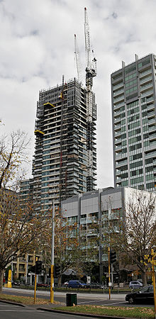
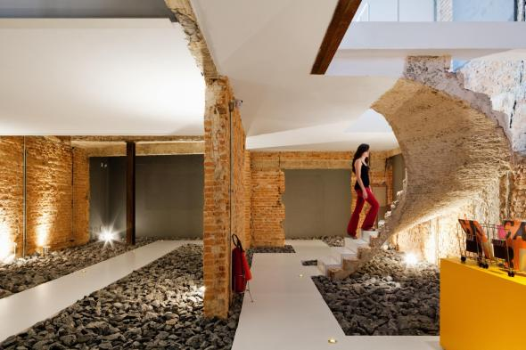

Servicios
construccion
En los campos de la arquitectura e ingeniería, la construcción es el arte o técnica de fabricar infraestructuras. En un sentido más amplio, se denomina construcción a todo aquello que exige, antes de hacerse, disponer de un proyecto y una planificación predeterminada. También se denomina construcción a una obra ya construida o edificada, además a la edificación o infraestructura en proceso de realización, e incluso a toda la zona adyacente usada en la ejecución de la misma.
Remodelacion
Quizás una de las frases más comunes que vas a escuchar cuando se hable de renovaciones interiores es "lo que inicialmente se planea gastar, duplícalo, y duplica también el tiempo". Las renovaciones, independientemente de su escala, pueden llevar mucho tiempo y ser costosas, especialmente cuando surgen cambios inesperados en el último minuto. Sin embargo, a menudo nos encontramos con situaciones en las que el diseño interior ya no es eficiente o sentimos que el diseño interior está un poco desactualizado y es hora de un cambio.
